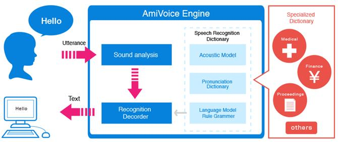
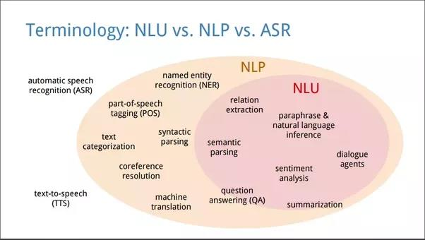
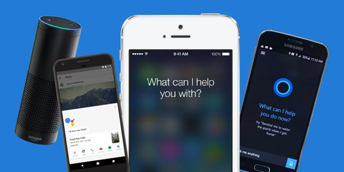
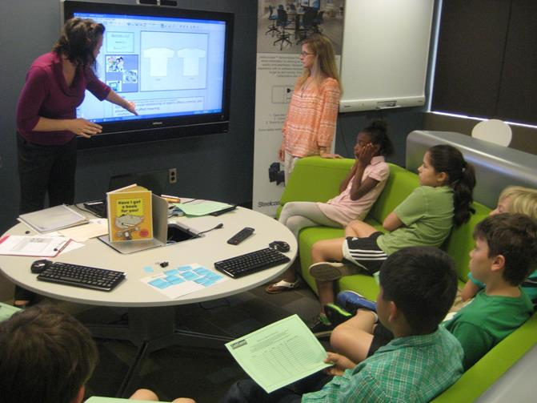
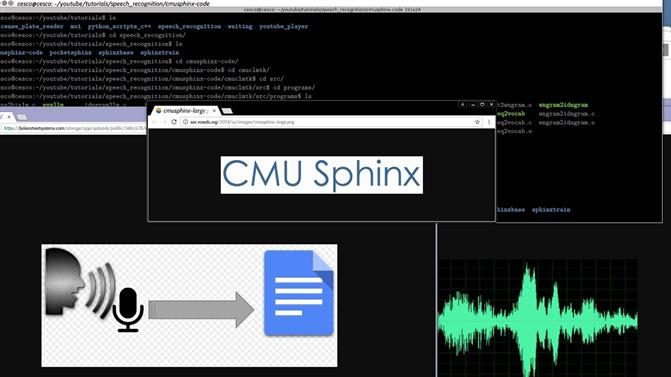
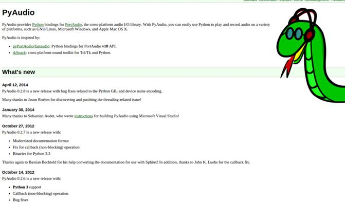
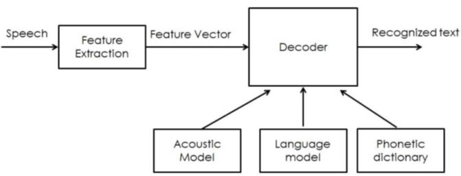
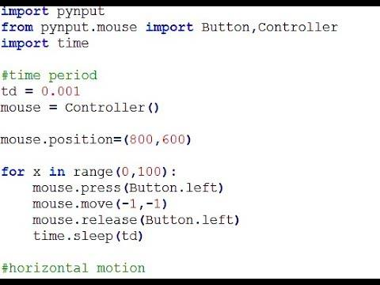

Data publicării: 17.09.2018
Autor articol: Adrian Iftene
Introducere
Tehnologia de recunoaștere a vorbirii a fost dezvoltată în ultimii două sute de ani, deși nouă ni se pare că aceasta este o activitate recentă din ultimii ani (Rybovic, 2018). Dispozitivul mecanic de vorbire acustic al lui Kempelen din 1784 a marcat primul pas în dezvoltarea recunoașterii vorbirii (Von Kempelen, 1970) (vezi Figura 1 de mai jos). Acest dispozitiv era capabil să pronunțe sunete și cuvinte.
Recunoașterea vorbirii este abilitatea unei mașini sau a unui program de a identifica cuvinte și expresii în limba vorbită și de a le converti într-un format care poate fi recunoscut de un calculator. Primele variante de software de recunoaștere a vorbirii aveau un vocabular limitat de cuvinte și fraze pe care le recunoșteau și le putea identifica doar dacă acestea erau rostite foarte clar. În prezent acestea au evoluat din ce în ce mai mult, iar software-ul are capacitatea de a recunoaște vorbirea exprimată în mod natural. În Figura 2 este prezentat AmiVoice Engine – un exemplu de sistem ce permite recunoașterea vorbirii. Cu cât domeniul discuțiilor este mai specific (medical, financiar, etc.), cu atât calitatea acestor sisteme este mai bună.

Recunoașterea vorbirii este un domeniu interdisciplinar, parte a lingvisticii computaționale (natural language procesing – NLP), care dezvoltă metodologii și tehnologii care permit recunoașterea și transformarea limbii vorbite în text de către calculatoare (Șchiopu, 2012). Este, de asemenea, cunoscut ca recunoașterea automată a vorbirii (automatic speech recognition – ASR), recunoașterea vorbirii de către calculator sau transformarea vorbirii în text (speech to text – STT). Domeniile implicate în recunoașterea vorbirii includ cunoștințe din lingvistică, informatică și inginerie electrică. În Figura 3 sunt prezentate aceste domenii, iar în plus în interiorul domeniului NLP este reprezentat și sub-domeniul de înțelegere a limbajului natural (natural language understanding – NLU).

În ultimii 200 de ani, au existat o mulțime de invenții care ne-au condus în cele din urmă la asistenții virtuali de astăzi, cum ar fi Siri, Alexa, Google Assistant și Cortana (vezi Figura 4). Acestea sunt capabile să ajute și să asiste utilizatorul pentru: (1) să găsească traseul spre un punct de interes, (2) să ofere informații despre cât de aglomerat este traficul la orice moment, (3) să facă rezervări de bilete de avion, (4) să apeleze la serviciile oferite de Uber, (5) să trimită un e-mail, (6) să ne spună ce e-mail-uri noi avem și să le citească, (7) să trimită SMS-uri, (8) să citească SMS-urile primite, (9) să citească ultimele tweet-uri, (10) să ofere informații despre meciurile din campionatul de baschet american sau din campionatul de fotbal englez, (11) să ne cânte o melodie de pe Youtube sau de pe calculator, (12) să ofere informații despre vreme, (13) să citească informații din calendar, (14) să planifice evenimente noi în calendar, (15) să găsească restaurante în apropiere și să facă rezervări la ele, (16) să apeleze la servicii de traducere, (17) să facă operații de bază cu aplicațiile de pe telefon: să le deschidă, să facă configurări, să le închidă, (18) să caute informații pe Internet și să ofere răspunsuri la întrebări, (19) să ofere știrile din ziua curentă, (20) să joace jocuri.

Giganții tehnici, precum și companiile mici, se străduiesc în permanență să îmbunătățească tehnologia și să găsească noi modalități prin care recunoașterea vorbirii poate face viața mai ușoară pentru toată lumea. Recunoașterea vorbirii este în prezent utilizată pe scară largă, mai ales în domenii precum inteligență artificială (IA) și învățarea automată. Companiile precum Microsoft, Amazon, Google și Apple au oferit deja asistenți virtuali integrați în dispozitivele lor. Google a dezvăluit recent noua sa componentă de AI, care poate efectua apeluri telefonice, poate face rezervări, poate purta o conversație și care vorbește ca un om. Diferența de comunicare dintre un om și o mașină inteligentă devine tot mai mică.
Toate aceste companii dețin baze de date uriașe de cuvânt vorbite de la clienții lor din întreaga lume. Tot ceea ce a fost spus vreodată asistenților cum ar fi Siri sau Alexa este pentru totdeauna stocat și folosit pentru a îmbunătăți recunoașterea vorbirii. Datorită sutelor de mii de ore de cuvânt vorbită, aceste dispozitive sunt aproape de 99% precizie.
Folosirea vorbirii într-o aplicație de eLearning
e-Learningul sau tehnologiile folosite în învățare au devenit din ce în ce mai prezente în educație și astăzi putem beneficia de cursuri moderne adaptate la ultimele apariții din domeniul informaticii (Pritchard, 2004) și (Azeta et al., 2008). Prezența tehnologiilor pe parcursul învățării în clasă a contribuit la stimularea și la îmbunătățirea interacțiunii cursantului cu profesorii și cu ceilalți colegi din clasă (Beijer et al., 2010). E-Learning apare în aproape toate domeniile. De exemplu în sălile de curs avem calculatoare, laptopuri sau tablete ce proiectează conținut educațional cu ajutorul unui video-proiector, ecran sau televizor 5 (Epignosis, 2014) și (Rybovic, 2018). În Figura 5 putem vedea cum arată o clasă de curs modernă din secolul 21.

În continuare vom prezenta detalii despre proiectul prezentat în (Aghav et al., 2018), unde autorii își propun să reducă costurile ce țin de infrastructura din școli prin furnizarea unui produs portabil pentru efectuarea învățării inteligente în sălile de clasă. Elevii au acces la materialele electronice puse la dispoziție de profesor într-un spațiu de depozitare extern și apoi le pot vizualiza pe ecranul de proiecție, când acesta predă informațiile respective.
Proiectul și-a propus să realizeze un bot, care să ofere opțiuni de e-learning pentru instituțiile educaționale și, de asemenea, pentru uz personal. Cu ajutorul bot-ului utilizatorul poate căuta orice informație pe Internet folosind comenzile vocale, eliminând astfel necesitatea folosirii tastaturii sau a mouse-ului. La sfârșitul procesului de învățare, este important să evaluăm experiența de învățare. Elevii care oferă feedback despre ceea ce au învățat la sfârșitul orelor sunt de ajutor pentru profesor, care poate să analizeze dacă conceptele sunt clare pentru ei. De asemenea, pentru succesul oricărui produs, feedbackul de la utilizatorul său ajută la îmbunătățirea produsului final. Pentru a realiza acest lucru autorii au făcut analiza sentimentului prezent în feedback-ul dat de utilizatori relativ la bot-ul prezent în aplicație și au generat un raport ce poate fi analizat și interpretat de profesor. Pentru analiza sentimentului au folosit clasificatorul Naïve Bayes.
PocketSphinx
Unul din obiectivele principale ale proiectului a fost realizarea unui sistem avansat, dar ușor de utilizat, care să interpreteze cu ușurință intențiile utilizatorilor din comenzile vocale fără a fi nevoie ca utilizatorii să învețe în plus sau să fie nevoie ca ei să se adapteze dispozitivului. Pentru a realiza acest lucru, au folosit CMU Sphinx pentru a recunoaște diverse comenzi vocale. Pe baza textului recunoscut în urma unei comenzi vocale se face legătura cu acțiunea ce ar trebui executată (vezi în Figura 6 de mai jos cum este transformată vocea în text). Controlul vocal contribuie, de asemenea, la îmbunătățirea accesibilității sistemelor pentru utilizatorii nevăzători sau pentru cei care au un handicap fizic.
PocketSphinx este o soluție open source de la universitatea Carnegie Mellon ce permite recunoașterea vorbirii. Este un motor ușor de adaptat ce funcționează atât în aplicațiile de pe dispozitive portabile și mobile, cât și în cazul aplicațiilor de tip desktop.

Procesarea audio
Pocket Sphinx are nevoie ca datele de intrare de tip audio să aibă următoarea configurație:
- paInt16 (16 bit int);
- canal Mono;
- 16.000 hz rata.
Deoarece, Raspberry Pi implicit nu înregistrează audio cu această configurație, autorii au folosit PyAudio pentru a formata intrarea audio în timp real (vezi Figura 7). PyAudio oferă librării Python pentru PortAudio, o biblioteca de intrare/ieșire audio de tip cross-platform. Cu PyAudio, se poate folosi cu ușurință Python pentru a reda și înregistra audio pe o varietate de platforme. PyAudio este inspirat de:
- PyPortAudio / fastaudio: librării Python pentru API PortAudio v18.
- tkSnack: instrument de procesare de sunete de tip cross-platform pentru Tcl/Tk și Python.

Biblioteca PyAudio a fost folosită împreună cu Pocket Sphinx când au folosit un dispozitiv de recunoaștere a vorbirii. Folosind PyAudio se poate configura microfonul pentru a accepta intrarea audio în format WAV și a le furniza decodorului Sphinx în formatul specificat. În timpul configurării microfonului au fost folosite următoarele caracteristici:
- Format;
- Channels;
- Sampling rate;
- Threshold;
- Silence limit.
Recunoașterea vorbirii
Un simplu microfon este folosit pentru a capta comenzile vocale date de utilizator. Pentru a evita preluarea de către microfon a sunetelor audio nedorite cu o intensitate prea mică, autorii au configurat o valoare pentru un prag, care a fost folosit ca o constrângere pentru datele de intrare. În acest mod autorii iau în considerare numai eșantioanele cu valori ale intensității vorbirii peste acest prag. Odată ce sistemul este pornit, procesul de recunoaștere vocală începe să ruleze în fundal. Acesta ascultă continuu, dar acționează numai atunci când constrângerea de mai sus este îndeplinită. Încetează să asculte când se detectează o tăcere de mai mult de 1 secundă. Sunetele audio detectate sunt stocate într-un fișier audio temporar, care este transmis ca dată de intrare pentru PocketSphinx. După finalizarea procesului de recunoaștere și de transformare a acestui fișier audio într-un fișier text, acest fișier este șters.
Metoda folosită pentru recunoașterea vorbirii este următoarea: se ia un fișier audio, acesta este împărțit în unități folosind ca separator momentele de tăcere și apoi se încearcă recunoașterea fiecărei unități și transformarea lor în cuvinte. Pentru a face acest lucru, autorii au considerat toate combinațiile posibile de cuvinte și au încercat apoi să le potrivească cu sunetele din unitatea de vorbire. În final au ales cea mai bună combinație din punct de vedere al potrivirii.
În funcție de structura vorbirii, au fost folosite 3 modele pentru recunoașterea vorbirii: un model acustic, un model pe bază de limbă și un model ce folosește un dicționar fonetic (vezi Figura 8 de mai jos) (Agval et al., 2018).

Un model acustic conține proprietăți acustice pentru fiecare sunet. Există modele independente de context, care cuprind proprietăți (vectorii cu cele mai probabile caracteristici pentru fiecare fonem) și dependente de context (construite din sunetele cu context). Este folosit pentru a reprezenta relația dintre un semnal audio și fonemele sau alte unități lingvistice care alcătuiesc vorbirea. Modelul este învățat dintr-un set de înregistrări audio, luate împreună cu transcrierile lor. Se formează din înregistrări audio a vorbirii și a transcrierilor textului și prin utilizarea de software care crează reprezentări statistice ale sunetelor care alcătuiesc fiecare cuvânt. Autorii au folosit în experimentele lor mostre ale tuturor comenzilor vocale luate de la 4 subiecți diferiți, pe care le-au folosit pentru a construi un model acustic propriu. Precizia sistemului este direct proporțională cu numărul de eșantioane audio folosite pentru a construi modelul acustic.
Un model de limbă este folosit pentru a restricționa spațiul de căutare al cuvântului. Definește ce cuvânt ar putea urma după cuvintele recunoscute anterior și ajută la restrângerea semnificativă a procesului de potrivire prin eliminarea cuvintelor care nu sunt probabile. Cele mai comune modele de limbaj sunt modelele de limbaj de tip n-grame – acestea cuprind statistici ale secvențelor de cuvinte și modele de limbă pe bază de automate cu stări finite – acestea definesc secvențele de vorbire prin automatele cu stări finite, uneori cu ponderi. Pentru a avea o precizie bună, modelul de limbă trebuie să aibă un succes cât mai mare în folosirea de constrângeri în spațiului de căutare. Aceasta înseamnă că ar trebui să fie foarte bun la anticiparea următorului cuvânt. Au folosit un model de limbă bazat pe trigrame deoarece comenzile vocale pe care utilizatorul le-a folosit nu conțineau mai mult de 3 până la 4 cuvinte. Aceasta înseamnă că modelul lingvistic va calcula probabilitatea ca orice cuvânt să apară, pe baza probabilității date de cele două cuvinte care-l preced.
Un dicționar fonetic conține o mapare de la cuvinte la foneme. Această mapare nu este foarte eficientă. De exemplu, doar două sau trei variante de pronunție sunt surprinse în ea. Cu toate acestea, modelul bazat pe dicționarul fonetic este destul de practic de cele mai multe ori și funcționează bine atunci când este utilizat împreună cu celelalte două modele.
Asocierea acțiunilor
La finalizarea dezvoltării sistemului de recunoaștere a vorbirii, adică conversia comenzilor vocale în datele textuale, mai rămâne sarcina de a asocia aceste comenzi la acțiuni corespunzătoare. Odată ce sistemul primește o comandă vocală și o convertește în text, acest text este stocat într-un fișier temporar. Conținutul acestui fișier temporar este dat ca o intrare pentru funcția actionmap().
Această funcție actionmap() conține un set de comenzi de tip if-else imbricate care cuprind toate comenzile posibile și acțiunile corespunzătoare. Dacă conținutul fișierului temporar menționat mai sus se potrivește cu oricare din condițiile if atunci acțiunea este efectuată.
Pentru a efectua acțiuni simple care se referă numai la sistemul de operare, se folosesc comenzi simple de tip bash. Acestea includ explorarea fișierelor de pe calculator, oprirea calculatorului, deschiderea anumitor aplicații etc. Pentru acțiunile ce urmează a fi efectuate într-o anumită aplicație, maparea acțiunilor devine mai dificilă, deoarece nu există comenzi specifice pentru a controla aceste aplicații. Pentru a rezolva această problemă, autorii s-au gândit să potrivească apăsarea tastelor de pe tastatură, care corespund unei anumite acțiuni dată cu comenzile vocale. Pentru asta ei au folosit o bibliotecă Python numită pynput. Această bibliotecă ne permite controlarea și să monitorizarea dispozitivele de intrare, cum ar fi tastatura și mouse-ul. În Figura 9 este un exemplu de folosirea a acestei biblioteci pentru a controla mouse-ul.

Analiza sentimentelor
Analiza sentimentelor se referă la extragerea sentimentului, adică orientarea pozitivă sau negativă pe care scriitorul o exprimă față de un anume obiect, persoană, eveniment, etc. Această caracteristică va permite utilizatorului să ofere feedback cu privire la bot, sau cu privire la profesor de la curs, sau cu privire la materialul de studiu etc., doar vorbind cu botul. Bot-ul va analiza apoi intrarea audio a utilizatorilor și va putea să le clasifice ca fiind pozitive sau negative. Pentru asta ei au folosit clasificatorul Naïve-Bayes care a efectuat analiza sentimentului.
Rezultate
Calculul performanței recunoașterii unui sistem ASR trebuie măsurat pe un corpus de date, diferit de corpusul de antrenare. Performanța sistemului de recunoaștere a vorbirii este de obicei specificată în termeni de precizie și viteză. Precizia este calculată prin rata de eroare a cuvintelor, în timp ce viteza este calculată în funcție de un factor ce este calculat în timp real. Alte măsuri de precizie includ rata de eroare a unui cuvânt și rata de succes a comenzii (CSR). Rata de eroare a cuvântului (WER) este o metrică folosită frecvent pentru a evalua performanța unui sistem de recunoaștere a vorbirii. Calitatea sistemului prezentat în (Agval et al., 2018) are WER = 46.15%, ceea ce înseamnă că sunt necesare mai multe date de antrenament și modele mai bune.
Concluzii
Recunoașterea vorbirii a început să fie din ce în ce mai folosită în aplicațiile pe care le folosim zi de zi pe telefoanele noastre inteligente sau pe calculatoarele noastre. Siri, Alexa, Google Assistant și Cortana sunt asistenți inteligenți care ne ușurează mult munca și ne permit accesul rapid la aplicații precum GoogleMaps, GoogleTranslate, la jocuri, la aplicații pentru muzică și filme, etc.
Proiectul prezentat în (Agval et al., 2018) are un potențial imens și este foarte util pentru a fi folosit în instituțiile de învățământ. Acesta va putea duce la înlocuirea calculatoarelor clasice, cu forme noi pentru învățare, economisind hardware și bani. Software-ul optimizat va contribui la crearea unui mediu de învățare mai bun pentru elevi și la îmbunătățirea metodelor de predare. Controlul vocal va face manevrarea sistemului foarte simplă și intuitivă.
Referințe bibliografice
- Aghav, S., Ghegade, S., Koujalgi, M., Singhal, G. R., Singh, R. (2018) Enhanced e-Learning using speech recognition. International Journal of Computer Engineering and Applications, Volume XII, Special Issue, March 18, www.ijcea.com ISSN 2321-3469, pp. 1-6.
- Azeta, A. A., Ayo, C. K., Atayero, A. A., Ikhu-Omoregbe, N. A. (2008) Development of Telephone-based e-Learning Portal. Proceedings of the 1st International Conference on Mobile Computing, Wireless Communication, e-Health, M-Health and TeleMedicine (FICMWiCom TelHealth ’08), 18th – 20th Nov. 2008 at Ladoke Akintola University of Technology (LAUTECH), Ogbomosho, Oyo State, Nigeria. pp. 141-149.
- Beijer, L. J., Rietveld, T. C., van Beers, M. M., Slangen, R. M., van den Heuvel, H., de Swart, B. J., Geurts, A. C. (2010) E-Learning-Based Speech Therapy: A Web Application for Speech Training. Telemed J E Health, vol. 16(2), pp. 177-80. doi: 10.1089/tmj.2009.0104.
- Epignosis LLC (2014) e-Learning concepts, trends, applications. Epignosis LLC San Francisco, California, CA 94104, United States of America.
- Hammad, R. K. M. (2018) A hybrid e-learning framework: process-based, semantically-enriched and service-oriented. PhD Thesis, Software Engineering Research Group (SERG), Faculty of Environment and Technology, University of the West of England, Bristol.
- Pritchard, S. (2004) E-learning Finds a Voice: a Study of a Speech recognition Interface on an E-learning System. Pp. 73-79. http://www.researchgate.net/publication/252767887_E-learning_Finds_a_Voice_a_Study_of_a_Speech_recognition_Interface_on_an_E-learning_System
- Rybovic, A. (2018) Speech Recognition In Training: What You Need To Know. eLEarning Industry, eLearning TRENDS. http://elearningindustry.com/speech-recognition-in-training-what-need-know
- Şchiopu, D. (2012) Speech Recognition Neural Methods in E-learning Environments. The 7th International Conference on Virtual Learning ICVL 2012, pp. 293-298.